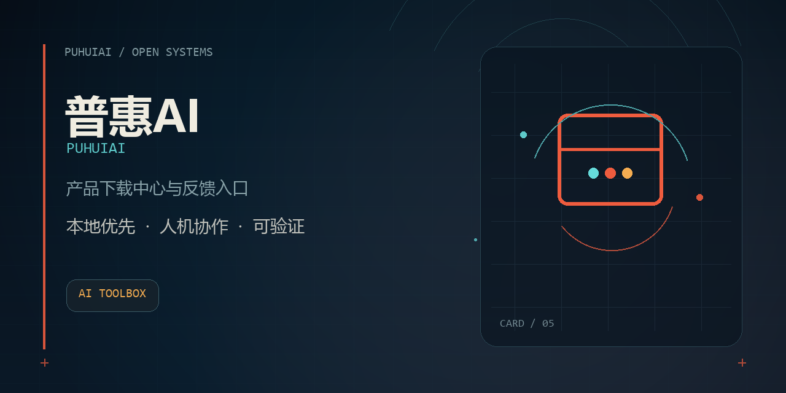

AI 代接来电
可疑号码打进来时，由 AI 接听并记录对方留言，减少无效打扰。
拦截骚扰来电，让可疑来电先由 AI 代接并留下留言与录音。号码归属地在本机离线查询，适合需要减少骚扰电话但又不能漏掉重要信息的 Android 用户。

可疑号码打进来时，由 AI 接听并记录对方留言，减少无效打扰。
通话结束后保存录音或留言内容，再决定是否回拨。
内置 51.7 万条号段库，本机查询，不上传电话号码。
下载 APK 后允许“安装未知应用”，打开拦接宝并按引导授予来电识别、悬浮窗和通知权限。完整版包含短信拦截测试功能，商店版不含短信权限。
号码与通话相关内容在本机处理。归属地查询不联网、不上传号码。软件不收集与功能无关的个人信息。
为什么需要多个权限？ 来电识别、悬浮窗和通知分别影响来电显示、代接状态和留言提醒。缺少权限会限制相应功能。
归属地为什么有时为空？ 归属地是号码注册地，不是当前所在地。虚拟号段和 400、800、95x 号段可能没有地理归属。